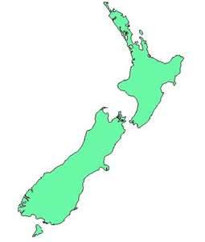

{kind=link}
By Lesley Wheeler, Max Chapnick and Drew Martin
The Project (Lesley):
Literary conversation has always crossed political, cultural, and geographical borders, although it seems to circulate especially rapidly lately: this morning, for instance, I read a New York Times article about a Greek poet online, following a link tweeted by a New Zealand writer while I was sleeping. Despite rapid signals through the ether, though, learning about a distant country’s contemporary writing can be surprisingly difficult. The physical books and journals are hard to get, but the problem of what to look for in the first place is even more daunting—contexts, resources, reviewers, and prizes are unfamiliar. This portfolio of terrific poems from Aotearoa New Zealand addresses the information gap by presenting work that’s not always audible to a North American readership, but deserves to be. At the same time, it creates a feedback loop for readers who know New Zealand poetry well: this is what it sounds like from here. A web-based magazine is no literary salon, but it still can serve as an important contact zone for writers and readers intrigued by each other’s strangeness.
Promoting poetic cross-talk does involve logistical obstacles and translation problems. Anthologies of any kind are more likely to capture networks than to represent a scene or period with just attention to all its aspects. This is especially true when outsiders set out to amplify voices from a distant source. We three editors live 14,000 kilometers from Auckland—even the mode of measurement is alien. Of the three of us, only I have visited New Zealand, and I came away, inevitably, with a very partial sense of what’s happening in antipodean coffee shops, writing programs, and magazines. The web, too, facilitates the illusion that another place’s traditions and conflicts are knowable, but the full complexity of a literary world is hard to grasp even when you’ve spent your whole life in the middle of it. This sample, in other words, engaging as it is, remains full of gaps and distortions.
Below we describe the process of assembling the portfolio as well as characterizing the product: what we heard and how we listened as well as the substance of the broadcast. We found that powerful writing carries pretty clearly across vast distances. Perhaps this is because, while our selection is infused with Aotearoan perspectives, slang, and geographic details—distance matters—in other ways, the south Pacific isn’t as far away as it used to be. We also had cause to remember, though, how much distance can separate three poet-editors sitting in the same room.
The Process (Drew):
The issue began as a stack of poems better suited for bicep curls than leisurely reading—nearly 500 pieces from 102 authors. At first, we approached the poems on our own, sorting them into “Yes,” “No,” and “Maybe” piles based on the following questions:
• Does the author express a meaningful connection to the place? “I went there for vacation once” didn’t cut it, but some of the authors on our short list immigrated to Aotearoa as adults, or grew up in New Zealand and then moved elsewhere.
• Is the language interesting, full of vivid details, free of cliché, craftily arranged for an appealing rhythm?
• Does the poem feel urgent? We rejected many well-written poems that ultimately didn’t take a stand, tell a compelling story, surprise us into laughter, or otherwise demand our full attention.
• Is the point of view unique or underrepresented in the pile? We hoped to assemble a collection of authors whose diversity mirrors New Zealand’s, considering not only gender and ethnic heritage but geographic location, age, subject matter, and poetic background.
• Finally, will the piece broaden the range of poetic forms and modes in the issue?
We began the collaborative curation process only to discover that none of us agreed about anything, we didn’t like each other, and the entire project was destined for failure. Okay, maybe that’s hyperbole. Yet, only three authors received an immediate, unconditional yes from each editor. On these occasions, we would throw our arms in the air, congratulate each other for having excellent taste, and press on with renewed vigor. Our divergent poetic tastes were brought to light early in the process, as the majority of authors had a champion. While Max favors structurally complex and allusive poetry, I prefer candidness, strong rhythms, and a performance orientation. Lesley typically falls somewhere between Max and me. However, as a forty-five-year-old mother of two, Lesley found power in poems that sounded flat to her childless, unwed co-editors. Max and I are twenty-two and have a penchant for romantic poems that made Lesley sigh impatiently. While these predispositions led to time-consuming debates in offices, classrooms, and local dives, they ultimately worked in our favor. The resulting collection is intentionally, wonderfully eclectic.
The roughest part of our deliberations occurred in October. The “maybe” pile had been boiled down to ten authors, but we only had three spots remaining in the issue (Shenandoah Editor Rod Smith capped this portfolio at 25 poems, but we could have chosen twice that and been proud of the results). That’s when the hard bargaining began. I’d say we traded authors like baseball cards if the simile weren’t so nationally specific.
The Poems (Max):
Many of the poems we chose have a universal quality, despite slight linguistic differences. If it weren’t for “pop” instead of “dad” and the Australian “Weet-Bix,” Kay Cooke’s rural farmhouse might as well be in the U.S. Midwest. Anna Jackson’s “Sabina” could be warily doling out sage advice in a forgotten henhouse on either side of the Pacific. In the midst of Tim Upperton’s description of loss, we forget that for us “flats” are “apartments.” Even poems laden with culturally-specific references and only-in-New-Zealand situations, such as “National Anxiety,” translate easily into American: you might want to substitute a basketball star for the “All Blacks” player and the “as” disappears from “sweet as,” but otherwise the dark humor and sexual commentary ring true.
Other aspects of the cultural and geographic landscape reflected in the collection are as foreign to U.S. readers as New Zealand vowels. The Māori traditions recast by Selina Tusitala Marsh in “How Ra Slowed Down Maui” are unfamiliar on this side of the Pacific. Drew and I don’t have a true image of the “acid lemonlime/ kiwifruit / regurgitated grass” hue adorning New Zealand’s hills and, in Natasha Dennerstein’s poem, a lover’s buttocks. And when Chris Price reads “a clack of dental castanets” out loud it sounds more percussive in her accent than mine. Strangeness, a feature of the best poems from any country, jolts us to higher sense of awareness. Whether you are a United Statesian or an Aotearoan, simply listen to Emma Barnes read “Ohio” and you might get a sense of what we mean.
Then what are the distinguishing features of twenty-first-century poetry from Aotearoa New Zealand? Paradoxically, since New Zealand is far from Anglo-American centers of literary power, the answer might be: an ambivalent worldliness. While many poems unfold inside New Zealand’s island borders, others gesture to faraway places and sources. Cliff Fell’s poem pays homage to paintings by Chagall, while Bernadette Hall alludes to an ancient Roman lawyer, Pliny the Younger, even as she expresses skepticism about the relevance of the reference. Harry Ricketts directly discusses New Zealand’s place in the world with a quiet scene on “Te Mata Peak.” Here, the “exaltation of larks” must compete with “throbbing” American music, as “the imperial imagination” competes with an indigenous explanation of geographical features. The poem derives beauty and energy from the unresolved tension between unlikely pairings. It’s a poem, in short, about conversations across borders, and Shenandoah somehow seems like just the right place for it.
Whatever room you’re reading in, in whatever country, we hope the strangeness of these poems inspires, provokes, and unsettles you, too.
The barbell curl specifically targets the biceps brachii which is located on the front part of the arm between the shoulder and the elbow. This muscle’s primary function is elbow flexion and forearm supination. The biceps also has two heads known as the long head and the short head.:””^
Remember to explore our very own blog site
<http://ideascollection.org/